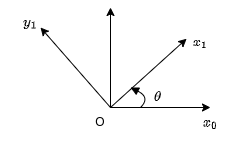

Rigid-body Motion
Rigid-body Motion Representation
Notes in this section are mainly based on reference [1] and follow the same notations.
Notations
A superscript is used to denote the reference frame, for example
- The position of point 0 with respect to b frame: \(p^b_0\)
- The orientation of the body frame b with respect to the world frame w: \(R^w_b\)
Rigid Motion
"A rigid motion is an ordered pair \((d, R)\) where \(d \in \mathcal{R}^3\) and \(R \in \mathcal{SO}(3)\). The group of all rigid motions is known as the Special Euclidean Group and is denoted by \(\mathcal{SE}(3)\)." [1]
The \(d\) part corresponds to a translation and the \(R\) part corresponds to a rotation.
Position Representation
A position vector can be represented with a column vector. A point in space can be represented with different coordinates when the representations are with respect to different reference frames. For example, a point on a 2D plane can be represented as
where reference frame 1 is rotated counter-clockwise by \(45^{\circ}\) with respect to reference frame 0.
Note that a column vector on the other hand may be the representation of different objects, not limited to a point:
- The position of a point
- The coordinates of a free vector, representing a translation
- The position of one coordinate system with respect to another

Rotation Representation
Rotation Matrix
A rotation is most commonly represented with a rotation matrix \(R \in \mathcal{SO}(n)\), where \(\mathcal{SO}(n)\) denotes the Special Orthogonal group of order n.
The properties of a rotation matrix \(R\):
- \(R \in \mathcal{SO}(n)\)
- \(R^{-1} \in \mathcal{SO}(n)\)
- \(R^{-1} = R^T\)
- The columns (and therefore the rows) of \(R\) are mutually orthogonal
- Each column (and therefore each row) of \(R\) is a unit vector
- \(\det{R} = 1\)
The rotation matrix on a 2D plane is given as

Thus for a point \(p^{0} = \begin{bmatrix} 1 \\ 1\end{bmatrix}\) in reference frame 0, it can be represented with respect to reference frame 1
In the case that \(\theta=\pi/4\), we get \(p^1=\begin{bmatrix} \sqrt{2} \\ 0\end{bmatrix}\), which is the same with the example given above.
A rotation matrix can also be interpreted in multiple ways [1]:
- A coordinate transformation relating the coordinates of a point \(p\) in two different frames
- The orientation of a transformed coordinate frame with respect to a fixed coordinate frame
- An operator taking a vector and rotating it to a new vector in the same coordinate system
Note that applying a translation to a free vector won't change the vector (direction and magnitude), but applying a rotation may change the vector to be a new one.
Euler Angles
A rotation matrix can be specified by the composition of 3 consecutive rotations. Each of the rotation is represented by an angle (\(\psi/\theta/\phi\)) around a specified main axis (\(x/y/z\)). There are many different combinations of Euler angles. For example, an ZYZ-Euler angle is given by \(R_j{ZYZ} = R_{z,\phi}R_{y,\theta}R_{z,\psi}\).
Roll, Pitch, Yaw Angles
Roll, pitch, yaw angles can be seen as a special case of Euler angles. In robotics, the body coordinate frame fixed to the robot is usually defined as z-axis pointing up, x-axis pointing front and y-axis point left. In such a case, yaw angle cooresponds to the rotation around z-axis, pitch angle cooresponds to the rotation around y-axis and roll angle cooresponds to the rotation around x-axis. Note that different conventions do exist for defining the body reference frame and naming roll, pitch and yaw angles (e.g. in aerospace engineering literature).
Axis/Angle
Axis/angle representation used the rotation angle around an arbitrary axis to represent a rotation and is often used to create other types of representations.
Quaternion
Quaternion representation is widely used for computation of 3D rotations. It is given in the form
The basis \(\vec{i},\vec{j},\vec{k}\) follow the following rules:
Generally the quaternions we use to describe orientations are unit quaternions, i.e. \(\| q \| = \sqrt{w^2 + x^2 + y^2 + z^2} = 1\). A non-unit quaternion can be normalized by
Note that "matrices represent linear transforms; quaternions represent a special case of linear transform: rotations in 3 dimensions"[4].
In addition to the quaternion itself, we have:
- Quaternion Conjugate: \(q^{*} = (w, -\vec{v})\). Geometrically, the conjugate represents the inverse of the rotation that q represents. If q rotates a vector in 3D space in one direction, \(q^{*}\) rotates it back to the original position. In terms of rotation, if q rotates a coordinate frame from frame A to frame B, then \(q^{*}\) rotates it from frame B back to frame A.
- The negative of a quaternion q, denoted as \(-q\), is simply the quaternion with all the components negated: \(q^{*} = (-w, -\vec{v})\). Geometrically, a quaternion and its negative represent the same rotation in 3D space. This is because a quaternion and its negative point to the same point on the 4D unit sphere, which corresponds to the same rotation in 3D space.
- Quaternion Inverse: \(q^{-1} = \frac{q^{*}}{{\| q \|}^2}\), for unit quaternion, we have \(q^{*} = q^{-1}\)
The following operations are frequently used:
- A point or vector \(\vec{v}\) can be rotated by a quaternion \(q\) by operation
- An orientation \(O\) can be rotated by a quaterion \(q\) by operation
- Multiple rotations can be composed by multiply the quatenion from the left (pre-multiply), for example, \(O^\prime\) is the orientation as if \(q_1\) were applied to \(O\), then \(q_2\), then \(q_3\)
Quaternions can be used to do the calculation efficiently but are not so intuitive to understand. Reference [3] and [5] are highly recommended if more details are required.
Composition of Rotations
A summary of the rule of composition of rotational transformations can be found in [1]:
Given a fixed frame \(o_0x_0y_0z_0\), a current frame \(o_1x_1y_1z_1\), together with rotation matrix \(R^0_1\) relating them,
- if a third frame \(o_2x_2y_2z_2\) is obtained by a rotation \(R\) performed relative to the current frame then post-multiply \(R^0_1\) by \(R=R^1_2\) to obtain
- if the second rotation is to be performed relative to the fixed frame, then pre-multiply \(R^0_1\) by \(R\) to obtain
The first case of composition is more commonly seen and it's also more intuitive to understand.
The multiple meanings of a vector and matrix
The multiple meanings a vector or a matrix can easily cause confusions when handling rigid-body motions. Interpretation 3 of a vector and interpretation 2 of a matrix listed above are often used when you're considering the relationship between two cooredinate frames in order to set up new frames. Interpretation 2 of a vector and interpretation 3 of a matrix are often used when you're handling the calculation of transformations in order to transform a pose from one coordinate frame to another.
Homogeneous Transformation
A homogeneous transformation matrix combines translation and rotation into one matrix and could be used to simplify the calculation of transformations.
Using the factor that \(R\) is orthogonal, we can get the inverse transformation as
In order to apply a homogeneous transformation, a column vector must be augmented
Then we have the equivalent calculation with
in the matrix form
Composition rule for homogeneous transformations
Given a homogeneous transformation \(H^0_1\) relating two frames [1]:
- if a second rigid motion, represented by \(H \in \mathcal{SE}(3)\) is performed to the current frame, then
- if the second rigid motion is performed relative to the fixed frame, then
Rigid-body Motion Calculation with Eigen
More relevant details can be found from Eigen offical documentation page [6][7][8] and this tutorial [9]. Here I only keep the most frequently used use cases. Source code in this section can be found on this GitHub repo.
Basic Operations of Matrices/Vectors
// matrix transpose and inverse
Eigen::MatrixXd R(3, 3);
R << 1, 2, 1,
2, 3, 4,
3, 1, 5;
// element access
// note: matrix index (row, column), index starts from 0
std::cout << "R(0,0) = " << R(0, 0) << std::endl;
std::cout << "R(1,2) = " << R(1, 2) << std::endl;
std::cout << "R(2,2) = " << R(2, 2) << std::endl;
Eigen::MatrixXd R_block = R.block(1, 1, 2, 2);
std::cout << "Take sub-matrix: \n" << R_block << std::endl;
Eigen::MatrixXd R_row = R.row(1);
std::cout << "Take row: \n" << R_row << std::endl;
Eigen::MatrixXd R_col = R.col(0);
std::cout << "Take column: \n" << R_col << std::endl;
// multiplication
Eigen::Matrix3d R2 = Eigen::Matrix3d::Identity();
auto R3 = R * R2;
std::cout << "R * R2: \n" << R3 << std::endl;
// transpose and inverse
Eigen::MatrixXd R_transpose = R.transpose();
Eigen::MatrixXd R_inverse = R.inverse();
std::cout << "R: \n" << R << std::endl;
std::cout << "R_transpose: \n" << R_transpose << std::endl;
std::cout << "R_inverse: \n" << R_inverse << std::endl;
// dot product and cross product:
Eigen::Vector3d v(1, 2, 3);
Eigen::Vector3d w(0, 1, 2);
double v_dot_w = v.dot(w);
Eigen::Vector3d v_cross_w = v.cross(w);
std::cout << "v: \n" << v << std::endl;
std::cout << "w: \n" << w << std::endl;
std::cout << "v_dot_w: \n" << v_dot_w << std::endl;
std::cout << "v_cross_w: \n" << v_cross_w << std::endl;
Pose Representation with Eigen
The type "Vector3f" is a column vector in Eigen, thus it can be used directly to represent a position. Eigen also provides data types to present a rotation matrix, axis-angle and quaternion.
Examples for the pose (position and orientation) representation with Eigen:
Eigen::Vector2d p2d(1.0, 2.0);
std::cout << "A point in 2d: \n" << p2d << std::endl;
Eigen::Vector3d p3d(1.0, 2.0, 3.0);
std::cout << "A point in 3d: \n" << p3d << std::endl;
Eigen::Matrix3d R;
R << 0, -1, 0, 1, 0, 0, 0, 0, 1;
std::cout << "A rotation matrix: \n" << R << std::endl;
Eigen::Quaterniond q_from_R(R);
std::cout << "A quaternion from rotation matrix: \n" << q_from_R.coeffs() << std::endl;
Eigen::Quaterniond q_unit = Eigen::Quaterniond::Identity();
std::cout << "A unit quaternion: \n" << q_unit.coeffs() << std::endl;
Eigen::Quaterniond q(2, 0, 1, -3);
std::cout << "A non-normalized quaternion: \n" << q.coeffs() << std::endl;
q.normalize();
std::cout << "A normalized quaternion: \n" << q.w() << std::endl << q.vec() << std::endl;
Eigen::Matrix3d R_from_q = q.toRotationMatrix();
std::cout << "A rotation matrix from quaternion: \n" << R_from_q << std::endl;
Eigen::Matrix3f R_from_angleaxis;
R_from_angleaxis = Eigen::AngleAxisf(0.25 * M_PI, Eigen::Vector3f::UnitX())
* Eigen::AngleAxisf(0.5 * M_PI, Eigen::Vector3f::UnitY())
* Eigen::AngleAxisf(0.33 * M_PI, Eigen::Vector3f::UnitZ());
std::cout << "A rotation matrix from angle-axis: \n" << R_from_angleaxis << std::endl;
Eigen::Quaternionf q_from_angleaxis(Eigen::AngleAxisf(0.33 * M_PI, Eigen::Vector3f::UnitZ()));
std::cout << "A quaternion from angle-axis: \n" << q_from_angleaxis.coeffs() << std::endl;
Transformation with Eigen
Reference
- [1] Spong, M.W. and Hutchinson, S. and Vidyasagar, M. (2005). Robot Modeling and Control. Wiley.
- [2] Lynch, K. M., & Park, F. C. (2017). Modern Robotics: Mechanics, Planning, and Control. Cambridge Univeristy Press.
- [3] https://eater.net/quaternions
- [4] https://www.anyleaf.org/blog/quaternions:-a-practical-guide
- [5] https://www.3dgep.com/understanding-quaternions/
- [6] https://eigen.tuxfamily.org/dox/group__QuickRefPage.html
- [7] https://eigen.tuxfamily.org/dox/group__TutorialGeometry.html
- [8] https://eigen.tuxfamily.org/dox/group__TutorialMatrixClass.html
- [9] https://www.cc.gatech.edu/classes/AY2015/cs4496_spring/Eigen.html